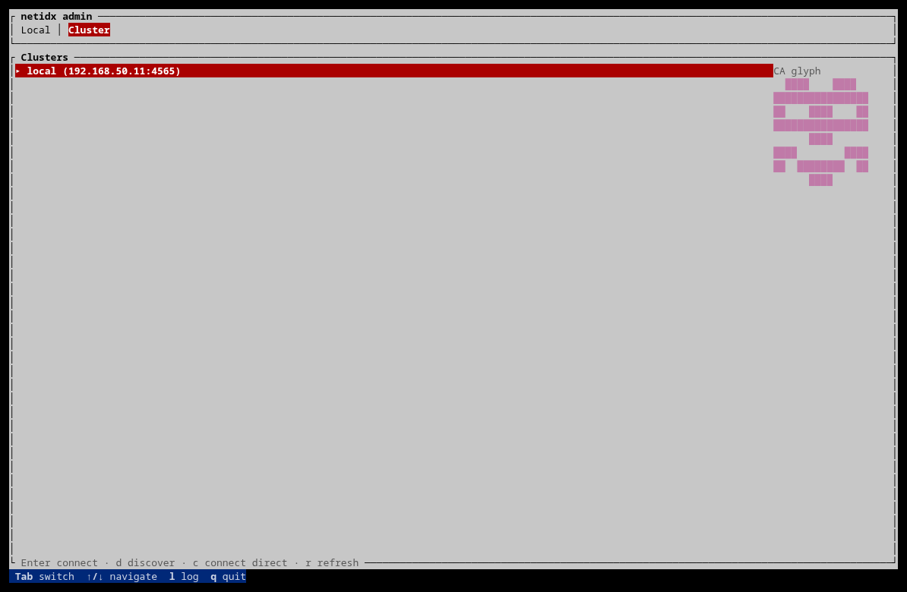
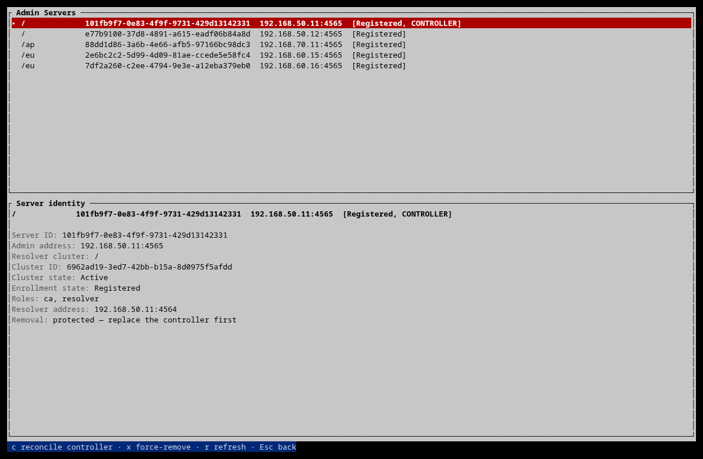

Admin-Plane Security
This chapter describes the security boundary of netidx admin. It is separate
from the data-plane authentication selected for publishers, subscribers, and
resolvers (anonymous, local, krb5, or tls). A deployment may manage
netidx entirely by editing configuration files and never run an admin server;
nothing in the netidx data plane depends on netidx admin.
When the admin plane is used, its job is deliberately narrow: establish node identities, maintain the authoritative network map, authorize administrators, and deliver approved changes to the right machines.
Trust hierarchy
An administrative network has one home CA and one active controller. The controller is the admin server that holds the CA role. Other admin servers are satellites: they may host a resolver or id-map role, but they do not gain the controller’s authority merely by having a certificate.
Every admin-server certificate contains:
- the DNS SAN
netidx-admin-server, used for TLS name verification, and - exactly one immutable URI identity,
urn:netidx:admin:server:<uuid>.
Only the controller certificate also contains
urn:netidx:admin:role:controller. The CA creates server and resolver-cluster
UUIDs; an enrolling machine cannot choose them. Renewal may rotate the private
key, but preserves the server UUID and the controller marker. A second live
controller identity cannot be issued until the old one has been revoked.
Each node stores its server UUID and the fingerprint of its home CA in
admin-server.json. At startup the daemon checks both against the serving
certificate. An address is routing data and may change; the UUID is identity.
trusted.pem may contain other CAs for data-plane federation. Those CAs do
not acquire admin-plane authority. Controller and node checks are pinned to
the exact home CA, not to any certificate that happens to chain to the trust
bundle.
Establishing trust without leaking a credential
The first connection to a network is a no-secret inspection. The TUI and CLI show a CA glyph: an identicon and grouped fingerprint which the operator compares with a value obtained out of band. The CLI can print it with:
netidx admin ca fingerprint 10.0.0.10:4565

mDNS advertisements are untrusted discovery hints and include the admin
server’s actual socket address, including a non-standard port. Direct CLI/TUI
connections accept host:port; a bare hostname uses the conventional admin
port 4565. In every case the address only chooses where to connect—the
certificate and confirmed home-CA glyph decide what was reached.
The server used for discovery need not be the controller. Its map and peer list are treated only as candidate hints. Before asking for or unsealing an administrator credential, the client:
- pins the candidate network to the confirmed home-CA fingerprint,
- resolves the controller from the network map,
- connects to that candidate under the same home CA, and
- requires the exact controller UUID and controller URI in its certificate.
Only then is a password or session token sent. A legitimate satellite admin server therefore cannot collect credentials by claiming to be the CA.
The protocol is length-delimited Pack, over TLS. Protocol version 6 is an epoch: peers require exact equality before a request or credential is sent. Compatible releases append defaulted fields and retain old fields; removals, changed tags, and security-sensitive semantic breaks advance the epoch. A hard epoch change requires upgrading admin servers, clients, and renewal daemons together.
Request authorization
Every request is assigned one authorization class in one central classifier. This prevents a new handler from quietly inheriting whatever checks a nearby handler happened to use.
| Class | Who may call it | Examples |
|---|---|---|
| Public | An unauthenticated connection | discovery, CA/map hints, CRL fetch, enrollment submission and polling |
| Controller only | The home-CA certificate carrying the controller URI | apply permission, referral, CRL, identity-map, controller-state, and service-control changes |
| Node self | A home-CA admin-server certificate | register or deregister that certificate’s own server UUID |
| Admin authenticated | A verified controller plus an administrator password or session | approve enrollment/delegation, issue or revoke, read/edit permissions, manage admins, remove a server |
| Local only | The protected local control socket | controller backup and recovery/autorenew credential rotation |
Registration is identity-implicit. A node may update only its own admin address, and its reported resolver configuration must match the CA-approved cluster, base, members, and referral topology. It cannot change its UUID, roles, cluster placement, another node, or the CA’s map.
The local control socket is not a loopback TCP shortcut. On Unix it is a mode 0600 Unix socket, and the server checks peer credentials for root or the daemon UID. It is intended for on-box privileged operations only.
The authoritative network map
The CA owns the network map. Server entries are keyed by immutable server UUID
and carry a mutable admin address, granted roles, cluster UUID, and enrollment
state. Only Registered servers are routing targets. Resolver clusters have a
stable UUID and are either Pending or Active; pending clusters are excluded
from ordinary routing.
An enrollment approval creates the grant before a node can register it. Every non-controller admin server must have the resolver role. The CA role is never accepted from an enrollee, and the id-map role is present only when explicitly granted. A role administrator may approve only cluster bases covered by its enrollment scopes and roles included in its allowed role set.
Security-sensitive operations fetch the map from the verified controller. Maps cached on satellites remain useful discovery hints, but are not treated as authority. When the controller sends a mutation it verifies the target’s exact server UUID before transmitting it. Permission changes go to registered members of the chosen resolver cluster; service control goes to the one chosen server UUID; identity registration goes only to registered, CA-granted id-map servers.
The TUI exposes this distinction directly: addresses can move, while UUIDs and CA-granted placement remain visible and stable.

Administrator passwords and sessions
Administrator passwords unlock role-admin slots in the CA vault; the server
uses Argon2 and never stores a reusable plaintext password. Failed network
password attempts are throttled by source address (IPv6 by /64): after each
failure the next attempt waits one additional second, using a ten-minute
sliding window. Only one password KDF per source may run at once, and a global
semaphore bounds Argon2 memory use under distributed traffic. Network-level
controls are still appropriate for an Internet-exposed controller.
netidx admin login performs that expensive authentication once and creates a
random 256-bit bearer token. The controller stores only its SHA-256 hash, in
memory, together with the vault slot’s stable UUID and credential revision.
Defaults are an eight-hour absolute lifetime, a 30-minute idle timeout, and at
most 4096 sessions. The optional CA-role settings
session_absolute_lifetime and session_idle_timeout override the two
deadlines.
On every use the controller resolves the slot and its current policy again. Removing a slot, removing and recreating an admin with the same name, or rotating its password invalidates the old session. Policy reductions and expansions take effect immediately. Restarting the controller invalidates all sessions.
The client stores one cache per normalized CA fingerprint. The complete cache,
including the token, is sealed with the platform TPM or Secure Enclave and the
opaque file is mode 0600. If sealing is unavailable, admin login refuses to
create a persistent cache. The TUI may retain the session in process memory;
one-shot CLI commands continue to accept a password. An explicit password
takes precedence over a cache.
netidx admin login --server 10.0.0.10:4565 --admin operations \
--accept-glyph 'THE CONFIRMED GROUPED FINGERPRINT'
netidx admin logout
netidx admin logout --all
Expired or server-rejected cache entries are deleted and the client reports that login is required. Logout always deletes the local cache and makes a best-effort server-side revocation when the controller is reachable.
Revocation, fanout, and partial failure
Revocation is immediate. The controller updates the signed CRL and fans it out to registered nodes; renewal daemons also pull it. Removing a dead server is a stronger operation: it revokes all live serving certificates for that UUID, removes the grant, recomputes cluster membership, and pushes the resulting topology. It never restarts a service.
Fanout is bounded (32 concurrent targets with a per-target timeout), and results are sorted by server UUID. Every operation has an operation ID carried in target logs, CA audit records, and the response. There is no durable job queue and no automatic retry. Failures identify both UUID and last address, and the corresponding operation can be repeated as an idempotent manual reconciliation.
Resolver servers do not communicate with one another, and resolver.json
does not need to list every cluster member. If a resolver configuration change
requires a restart, the operator performs a rolling restart: restart one
member, wait at least its delay-reads period so publishers republish, verify
it, then restart the next member. The admin plane never automatically restarts
resolver members.
Residual trust and availability assumptions
- Compromise of the live controller host, the CA recovery password, or a signing-tier administrator is a CA compromise.
- The single controller is an admin-plane availability dependency. If it is down, remote mutations and enrollment stop; existing resolvers and local privileged controls continue operating.
- A WAN partition can leave a fanout partially applied. UUID-address results, operation IDs, and idempotent reconciliation make this visible and recoverable, but do not pretend the partition did not happen.
- Disaster recovery cannot determine whether the old controller will return. Fencing it is an operator responsibility and a mandatory part of the recovery procedure.